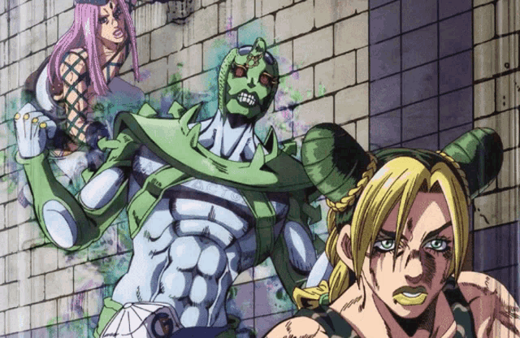
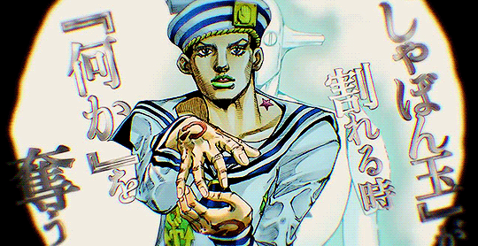
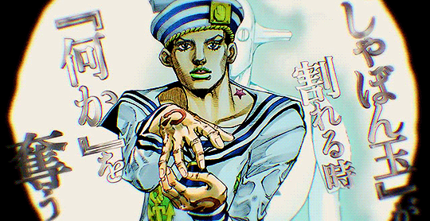

welcome to the legend of zelda
soft and wet
Josuke Higashikata, the protagonist of "JoJo's Bizarre Adventure: JoJolion," possesses the Stand known as Soft & Wet. This Stand, which serves as a central element in the eighth story arc of the series, exhibits a versatile and enigmatic set of abilities that reflect both Josuke's resourcefulness and the surreal environment in which the arc takes place. Soft & Wet's primary power revolves around the manipulation of "bubbles," which can be imbued with various effects, such as the ability to steal properties from objects or create protective barriers. This makes Soft & Wet a formidable force in both combat situations and when it comes to solving puzzles throughout the narrative.The symbolism embedded within Soft & Wet is intricately connected to the overarching themes explored in "JoJolion," particularly those pertaining to identity, memory, and the nature of reality. Josuke's personal journey to uncover his past and regain his lost memories mirrors Soft & Wet's capacity to extract and manipulate information from both objects and individuals. Through the utilization of its abilities, Soft & Wet presents Josuke with the challenge of confronting his own sense of self and grappling with the enigmatic aspects of his history. This dynamic drives the narrative forward, imbuing it with intrigue and suspense.The design of Soft & Wet, characterized by its sleek and fluid appearance, perfectly complements both its abilities and Josuke's persona. The Stand's mysterious nature and surreal powers contribute to the pervasive sense of mystery and fascination that permeates "JoJolion," captivating readers as they gradually unravel the secrets of the world and its characters. As Josuke's journey progresses and the true nature of Soft & Wet is gradually unveiled, its significance as a thematic and narrative catalyst becomes increasingly evident, solidifying its status as one of the most memorable Stands in the "JoJo's Bizarre Adventure" series.
c-moon
C-Moon, a Stand featured in the sixth story arc of jjba Stone Ocean, holds a prominent role in the narrative. Enrico Pucci, the main antagonist of the arc, wields this Stand, which symbolizes a crucial turning point in the story. The abilities possessed by C-Moon are both formidable and surreal, reflecting Pucci's twisted ambitions and his relentless pursuit of ultimate power. Its primary ability allows it to manipulate gravity, resulting in the inversion of gravitational pull within its vicinity, leading to disorienting and chaotic effects.The symbolism embedded within C-Moon aligns with the overarching themes of part 6, particularly the exploration of fate, destiny, and the quest for transcendence. By manipulating gravity, C-Moon forces the characters to confront their own perceptions of reality and the inevitability of their fates. Its presence in the story acts as a catalyst for transformation and growth, compelling the protagonists to confront their inner demons and overcome seemingly insurmountable challenges.The design of C-Moon further enhances its mystique and menace, characterized by its otherworldly appearance and ominous aura. As the climax of part 6 draws near, the true extent of C-Moon's power and significance promises to play a pivotal role in resolving the arc's mysteries and conflicts. Its enigmatic abilities and elusive user contribute to its status as one of the most captivating and formidable Stands in the jjba series.
stone free
Stone Free serves as the Stand of Jolyne Cujoh, the central character in "JoJo's Bizarre Adventure: Stone Ocean," the sixth narrative arc within the series. Its abilities are as distinct as its user, reflecting Jolyne's resourcefulness and determination in the face of challenges. The primary ability of Stone Free allows Jolyne to transform her body into thread-like strands, granting her unparalleled flexibility and agility in combat. This ability not only serves as a formidable offensive tool but also enables Jolyne to maneuver through narrow spaces and execute intricate strategies.The symbolism embodied by Stone Free resonates with the overarching themes of "Stone Ocean," particularly the notions of freedom and the struggle for independence. Jolyne's quest to prove her innocence and liberate herself from the constraints of her circumstances mirrors Stone Free's ability to unravel itself from physical limitations. Through its unique capabilities, Stone Free compels Jolyne to confront her inner demons and assert her agency in a world rife with adversity and injustice.The design of Stone Free, characterized by its humanoid appearance adorned with intricate patterns reminiscent of stitching, perfectly complements its abilities and Jolyne's persona. Its fluid and dynamic nature reflects Jolyne's resilience and adaptability as she navigates the perils of the maximum-security prison where a significant portion of the arc unfolds. As Jolyne's journey progresses and the true potential of Stone Free is unlocked, its significance as a symbol of empowerment and liberation becomes increasingly evident, solidifying its status as one of the most memorable Stands in the "JoJo's Bizarre Adventure" series.
helpful links
 
